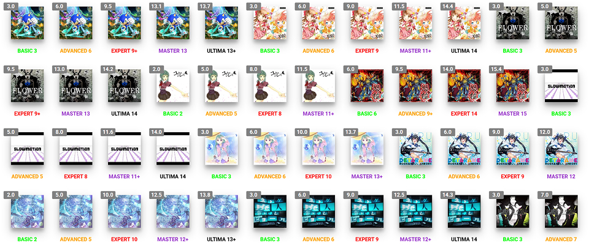
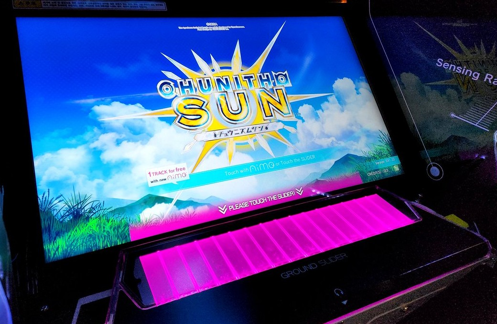

세가에서 개발한 아케이드용 리듬 게임. maimai 시리즈의 개발진이 제작하였다.
캐치프레이즈는 '공간을 베는 신감각 음악 게임'이며, 제목인 츄니즘은 '중2병(츄니뵤)와 리듬(리즈무)'을 합친 것.
지금까지의 리듬 게임과는 다른 색다른 조작감과 '자아도취감'을 콘셉트로 삼았다.
또한 일러스트 캐릭터, 그리고 애니메이션, 에로게, BMS 등 일본 인터넷 서브컬처를 반영한 수록곡 등도 특징이다.

방식은 기본적으로 기존의 비트매니아를 비롯한 건반 게임과 유사하지만, 입력 디바이스를 버튼이 아닌 '그라운드 슬라이더'라는
독자적인 구조를 채택하여 차별점을 두고 있다.
그라운드 슬라이더는 외관상으로는 건반과 비슷하나 실제 느낌은 구분감이 없고 아크릴 재질의 터치 스크린을 터치하는 느낌이며,
때문에 노트의 크기가 자유자재로 바뀌는 것이 특징이다.
또 이를 이용해서 마치 터치 게임과 같은 슬라이드 노트도 구현하였다.

아래의 분홍색 부분이 슬라이더이다.
판정은 JUSTICE CRITICAL, JUSTICE, ATTACK, MISS로 나뉘는데, 각각 1000000점을 기준으로 해서
총 노트 수로 나눈 점수의 101%, 100%, 50%, 0%를 취득할 수 있다. (이론상 최대치는 1010000점)
콤보 수 관련 설정은 있지만 최대 콤보수는 점수에 영향을 미치지 않는다.